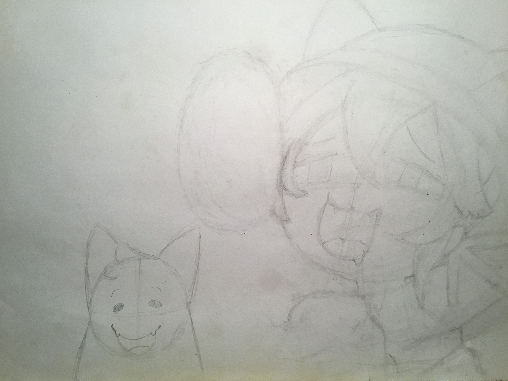
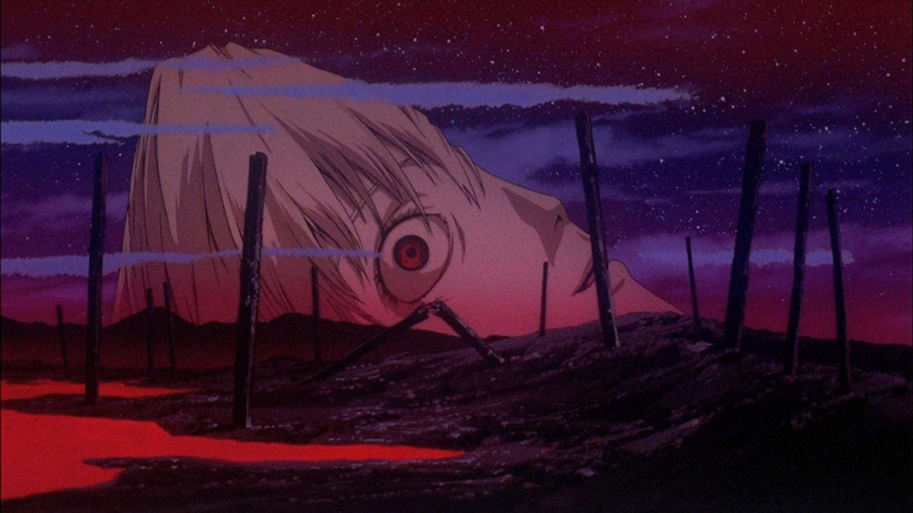

Hello! My name is Kiera, and I'm a soon-to-be graduate from Fresno City College. I also attended the Center for Advanced Research and Technology (CART) for 2 years. The first year, I was in the Cybersecurity lab during lock down and this year as a Web development student. After graduating from high school, I'll be majoring in English at Fresno City College. During the summer, I'm planning to learn new hobbies like drawing and reading, and volunteering.
Awards and achievements
- In 2020-2021 during the pandemic and my 11th year of high school, I earned Honor roll.
Hobbies
Occasionally when I'm in the modd, I like to draw. Someday I would like to take it seriously, but for now I just draw doodles every now and then. The quality of my drawings vary greatly, sometimes I'm happy with how they turned out. I don't usually finish, however I am pround of my OneShot drawing. Anyway here's a couple of sketches.
Sometimes I like to play video games. I mainly play platforming and story heavy games. My favorite games include Undertale, Omori, and the Binding of Isaac. I currently have many games I want to play but don’t have the time or patience. Hopefully one day I’ll finish Yume Nikki or Celeste.
One of my favorite things to do is to analyze media such as tv shows and movies. My favorite movies and tv shows are Bojack Horseman, Evangelion, Beastars, and Full Metal Alchemist. If I were to give an example about the themes, I’ll use Bojack. Basically everything in Bojack revolves around the character and their past. Their past concrete certain ideas into their heads which affect how they currently act today, and getting over certain patterns of behaviors requires confronting their past. Bojack is unable to learn from his mistakes because he constantly suppresses his memories through drugs and alcohol. It’s simple but I really like how you can see this theme in every season and almost every episode.
4 Year Plan
My four year plan is to graduate Fresno High School and attend Fresno City College to earn an English Associate. Next would be to transfer to San Jose University to earn a BA in English. I would also like to involve myself in political activism, specifically understanding and advocating for certain laws relating to the police and other institutions.